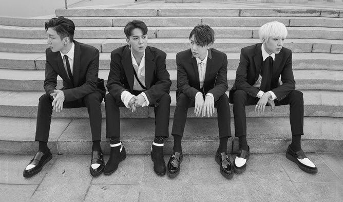

About WINNER
WINNER is four-member South Korean boy band that was formed in 2013 by YG Entertainment through Mnet survival program WIN: Who Is Next leading to their official debut on August 17, 2014 with studio album 2014 S/S. Originally a five-piece band, Taehyun, departed from the group in November 2016 for his mental health and well-being. Upon their debut, The Korea Herald cited their immediate success as "unprecedented" for a new group, thus dubbed as "Monster rookies". WINNER is often cited as a "self-producing" band with all members actively taking on roles from producing and choreographing to designing and marketing.
WINNER looking chic in suits for their promotion of Fate Number Four single album released in 2017.
The Members
Discography
WINNER has some awesome discography, consisting of four studio albums, three extended plays, and twelve singles! My favourite has to be Love Me Love Me but here is a list of their songs for you to decide for yourself ;)
- Empty (2014)
- Baby Baby (2016)
- Really Really (2017)
- Island (2017)
- Everyday (2018)
- SOSO (2019)